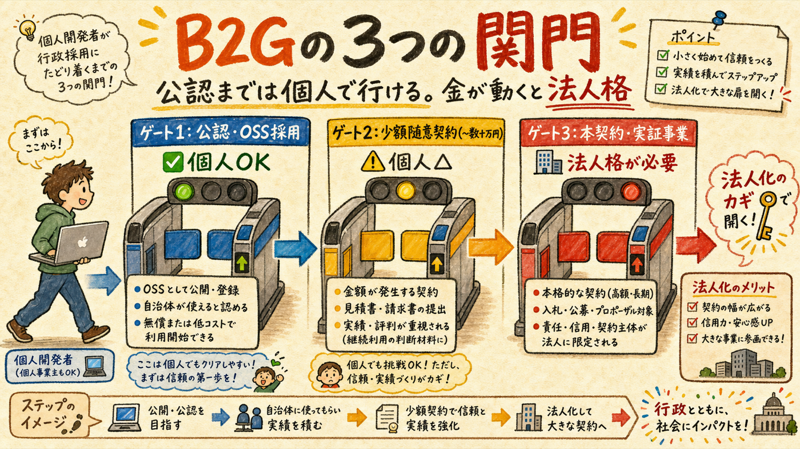
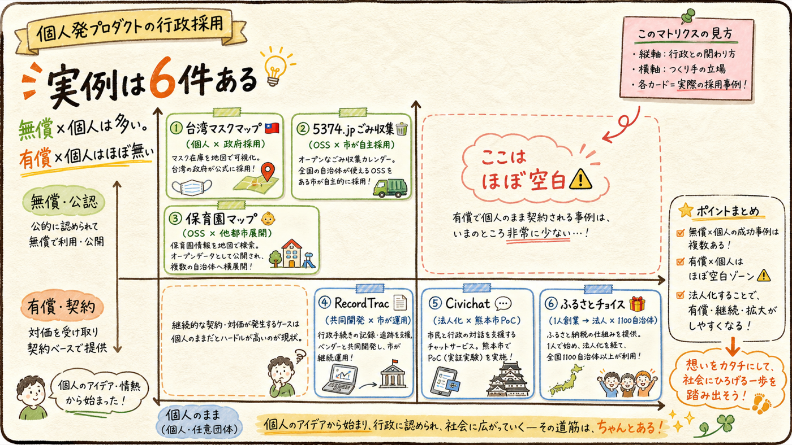
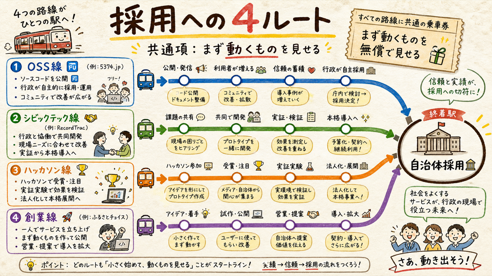
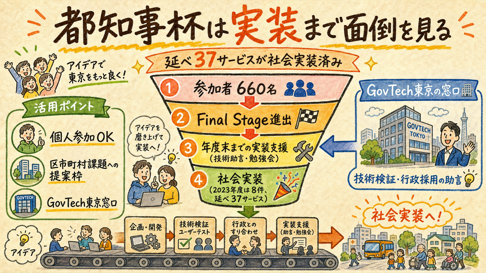

「個人事業で作ったものが行政に採用されたケースはあるか」— 答えは Yes。ただし全事例に共通するパターンがあり、「個人のまま行ける距離」と「法人化が必要になる地点」がはっきり分かれている。工事情報マップのB2G構想に直接使える形で整理した。
無償の採用と有償の契約は、別のゲート

調査の結論を先に言うと、「行政に採用される」には3段階あり、要求されるものが違う。ゲート1: 公認・協定・OSS採用 — 個人のままで到達可能。実例多数。ゲート2: 少額随意契約 — 入札なしで発注できる枠。2025年4月の改正で基準額が引き上げられ（例: 市区町村の工事200万円等、区分別）、個人事業主でも受注の入口はある。ゲート3: 継続的な委託契約・実証事業 — 財務・実績審査と法人格が事実上必須。東京都のキングサーモンプロジェクト等の実証制度も応募資格がスタートアップ企業前提 [仮説: 個人事業主は実質対象外]。
※ 出典: 総務省 少額随意契約基準額改正資料 (soumu.go.jp)、キングサーモンPJ公募要領 (kingsalmon.metro.tokyo.lg.jp)。2026-07-10取得。
全事例が同じ分布を描く

| 事例 | 作った人 | 行政との関係 | 示唆 |
|---|---|---|---|
| 台湾マスクマップ (2020) | 個人エンジニア（呉展瑋）が一晩で開発 | 唐鳳（デジタル大臣）経由で政府採用。全土約6,000拠点・3分毎更新 | 個人のまま最速採用の実例。ただし「政府側に受け手がいた」特殊条件 |
| 5374.jp (2013) | Code for Kanazawa（シビックテック） | OSS公開→広島・渋谷等に展開。江別市では市の清掃部局自身が改修して公式公開 | 行政が自主的にOSSを採用する現象は実在する。ただし無償 |
| さっぽろ保育園マップ | Code for Sapporo | MITライセンスで水戸・つくば・流山・千葉等に横展開 | 「マップ×自治体データ」の横展開モデル。おさんぽセーフティと同型 |
| RecordTrac (2013, 米) | Code for America フェロー数名 | Oakland市と共同開発→市が正式運用→他市採用→NextRequestとして事業化 | 無償共同開発→運用実績→法人化して有償化、の教科書的順路 |
| Civichat (2021) | 学生発の制度案内チャットボット | 株式会社化した上で熊本市と実証実験 | PoC段階で既に法人。「実証」ですら法人格が前提だった |
| ふるさとチョイス (2012) | 須永珠代・資本金50万円・1人創業 | 4年で1,100自治体から受託（寄付額1〜5%の成果報酬） | 1人発→B2G大規模収益化の最大実例。ただし契約主体は最初から法人 |
探索の限界も明記: コロナ禍の国内個人開発サイトが自治体に「正式採用」された確証事例は、今回のWeb検索4系統では発見できなかった（不在の証明ではない）。
※ 出典: Newsweek日本版、江別市公式サイト、Code for Sapporo、マイナビニュース、PR Times、Columbia Journalism Review。すべて2026-07-10取得。
どの路線も無償の実物から始まっている

あなたは既に最短ルートの改札内にいる

都知事杯オープンデータハッカソンは、表彰して終わりではなく社会実装支援が制度化されている: Final Stage進出チームへの年度末までの実装支援（技術助言・勉強会）、GovTech東京と連携した行政採用向けの技術検証窓口、区市町村が提示する課題への提案枠。都の発表では延べ37サービスが実装済み、2023年度は660名参加・8件実装。個人参加も可。
工事情報マップ構想への意味: 「自治体に工事情報の公開ツールとして採用してもらう」というB2G仮説を検証する最初の窓口が、参加中のハッカソンに標準装備されている。外に営業に行く前に、まずFinal Stage進出→実装支援枠で「区市町村の道路管理課と繋いでほしい」と言うのが最短。
※ 出典: 東京都プレスリリース (metro.tokyo.lg.jp 2026-06)、CodeZine。2026-07-10取得。[未確認] 実装37件の個別作品名・連携先の一覧は公開資料から特定できず。
法人化は「有償化の話が出た時」でいい
| ステップ | やること | 実例の裏付け |
|---|---|---|
| Step 1（いま〜7/27） | おさんぽセーフティを提出・公開。動く実物＝共通乗車券を手に入れる | 6事例すべて「動くもの」が先 |
| Step 2（8月〜年度内） | Final Stage進出を狙い、実装支援・GovTech東京窓口経由で1自治体の「公認実績」を作る（無償でよい） | 台湾マスクマップ・5374.jp型: 公認は個人のまま取れる |
| Step 3（有償化の話が出た時） | 法人化を検討。少額随契（〜数十万円規模）なら個人のまま試せる可能性もある | Civichat・ふるさとチョイス型: 契約の直前に法人化で間に合う |
先に法人を作らないこと。実例が示すのは「実績→需要確認→法人化」の順。需要が確認できる前の法人化は固定費と事務負担だけが先行する。ふるさとチョイスですら資本金50万円・需要を見てからの勝負だった。